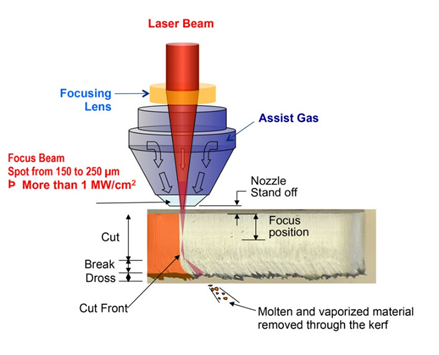
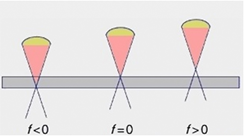

Objective
To study the effect of process parameters (laser power, scan speed, stand-off distance, oxygen assist gas pressure) on kerf-width, taper angle and cut quality (dross, striation) in fiber laser cutting of stainless steel sheet.

A fiber laser is a laser in which the active gain medium is an optical glass fiber doped with rare-earth elements such as erbium, ytterbium and neodymium, and pumped by diode laser operating at about 950 nm. Ytterbium doped fiber laser has the highest efficiency, therefore high power fiber lasers for material processing applications are Yb-Fiber lasers. The wavelength of Yb-doped fiber laser is 1.07 μm (infra- red). High power fiber lasers are based on double-clad fiber. The gain medium forms the core of the fiber, which is surrounded by two layers of cladding. The relative values of refractive indices of core, n 1 and inner clad, n 2 and outer clad n 3 are n 1 > n 2 >n 3 . The Yb- laser beam propagates in the core guided by the inner cladding through total internal reflections, while the pump beam propagates in the inner cladding layer guided by the outer cladding. This arrangement allows the core to be pumped with a much higher power beam than could otherwise be made to propagate in it, and enables
Fig. (a) Schematic of fiber laser generation, (b) Double-cladded Fiber used for guiding the pump laser
beam and the Fiber laser beam, (c) Detailed construction of a high power Yb-fiber laser pumped by
multiple diode lasers
For cutting operation the high power laser beam is focused with the help of a lens and the focused laser beam is impinged on the metal surface. Along with the laser beam a pressure gas jet is also blow coaxially at a high speed. The gas assists in laser cutting process. Laser melts the material and the high pressure jet ejects out the molten material, thereby creating a clean kerf. Assist gas can be either an inert gas like N2 or Ar or a reactive gas like O2.  
Fig 3.3. .....................